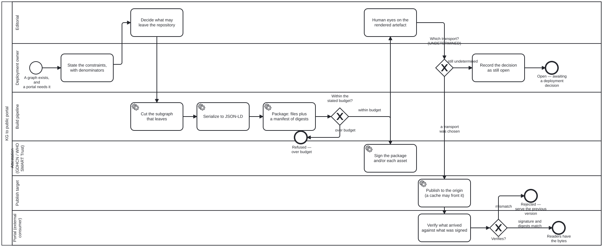

Generated from
cat-harness/skills/kg/kg-core/kg-to-portal.md— do not edit here.
KG → package → distribution → portal
A knowledge graph is in a repository. A portal — a Moodle site, a ministry’s intranet, a department page — needs to show what is in it, to readers the repository never hears about. This is the shape of that path, and it is written as a pattern because the IRIS replica built it by accident first and nothing named it, so the next instance would have rebuilt it.
Owner, 2026-09-20:
“this is doing webportal mockup as part of CRDM of kg. based on custom assets with need to defin a data ingestion pirpeline (subject ot operational/deployment constrsaints, $, network traffic, graph seize etc), from KG into a public portal. this is ecample creating a CDN to sit behind moodle.”
The one distinction that makes the rest fall out
A CDN is not a publication host. It is a layer in front of one.
PUBLICATION_HOSTS in schemas/cat-harness.ts is github-pages,
local-server, jurisdiction-endpoint, none — axis 3 of
deployment-topologies.
Every value answers what serves the rendering. A CDN answers a different
question: what stands between the server and the reader. jsDelivr in front of
raw GitHub, Cloudflare in front of an origin, an institutional cache in front
of a ministry endpoint — the origin is unchanged in all three.
Getting that wrong has a specific cost, and it is the cost xies calls “EXTREME
care in URL handling”: if the CDN is modelled as the host, the published URL
becomes the CDN’s URL, and the day the CDN changes every citation breaks. Model
it as a layer and the canonical URL stays the origin’s, with the CDN as an
accelerated route to the same bytes.
Do not add a CDN value to PUBLICATION_HOSTS. A fifth value there without
a row in the proposal is a vocabulary nobody agreed, and this one would also be
wrong.
The six stages
| # | stage | produces | who decides |
|---|---|---|---|
| 1 | Select | the subgraph that leaves | the deployment — see §”What the deployment decides” |
| 2 | Serialize | one JSON-LD document | the platform — kg-export already does this |
| 3 | Package | an addressable set of files with a manifest | the platform |
| 4 | Sign | a verifiable attestation over the package | the deployment picks the scheme |
| 5 | Distribute | bytes at an origin, optionally behind a cache | the deployment picks the transport |
| 6 | Verify | a portal-side check that what arrived is what was sent | the portal |
Stage 1 is not “export everything”. kg-export produces the whole graph
because inspection wants the whole graph; a portal wants what its readers may
see. The two are different asks and running the second as the first is how a
qa-review verdict, a bean’s blocking note or an unpublished draft reaches a
public cache. There is already a sentence about this in cat-harness.ts —
content “stripped out of KG before sending to publication” — and stage 1 is
where that happens, once, rather than at each consumer.
Stage 6 is the one that gets dropped, because stages 1–5 all produce
something visible and this one produces nothing when it passes. A package that
is signed and never verified is a package whose signature is decoration. If the
portal cannot verify, say so — unknown is a third state and a portal that has
not been asked is not a portal that checked.
What the deployment decides, and the pipeline must not
Three decisions belong to the deployment. The owner named all three as constraints rather than as preferences, and a diagram or a script that picks one is asserting a decision nobody made.
1. The ingestion method is UNDETERMINED. Owner, verbatim: “ingestion method not determined.” Not “to be confirmed” and not “defaults to X” — the pipeline is drawn with a decision point there, and the decision point stays open until a deployment answers it. Candidates differ in every dimension that matters (a pull from the portal, a push to an object store, a git fetch, a signed tarball on a schedule) and the choice is governed by the constraints below, not by which is nicest.
2. The store must be versioned, and which one is a deployment choice. Owner: “need hosted git or suitable versioned storage for graph network like KG. (can switch tooling based on deployment considerations).” Versioned is the requirement; hosted git is one satisfaction of it. A portal that shows a graph needs to be able to say which graph — an unversioned store cannot answer “what did this look like last term”, which is the question a course reading list asks every year.
3. The distribution transport. GitHub Pages is a tool choice — xies
carries that verbatim, and since 2026-09-30 it is literally one: the gh-pages
Tool, satisfying the general render-kg-to-cdn
step — and so is jsDelivr, Cloudflare, or an object store.
Reach host behaviour through publication.host, never by assuming Pages’
behaviour. The axes already record why this matters: Pages cannot serve
application/ld+json, and a local server can.
The constraints the choice is made under
Owner: “subject ot operational/deployment constrsaints, $, network traffic, graph seize etc.” Four, and each needs a denominator before it can be argued with:
| constraint | the number it needs | where one comes from |
|---|---|---|
| money | cost per GB served, and per GB stored | the host’s price list; a free tier is a number too |
| network traffic | bytes × requests, per publication period | the package’s own size and the portal’s reader count |
| graph size | nodes and edges, and bytes of the serialization | kg-export reports it; the IRIS replica’s catalogue reports items, files and bytes separately |
| latency | where the readers are against where the origin is | the deployment’s own geography |
A constraint with no denominator is a preference. “The graph is too big” is
not a finding; “6.2 MB per publication × 400 readers per week against a 100 GB
free tier” is. This is the same rule materialization’s size gate already
keeps — “3 items of 361.55 GB is a fraction, and ‘3 items’ alone is not”.
Measure, and say when you could not. cdn.jsdelivr.net is egress-blocked
from this repository’s own CI container, so no figure about it can be measured
here. A figure taken from a vendor’s documentation is a quoted figure and
says so; one taken from a chat message is neither, and the IRIS replica catalogue
carries the worked example — every note in a branch said “0.7 TB”, sourced from
a chat message, and the measured figure was about half.
Trust: GDHCN, distributed as WHO SMART Trust DID trustlists
Owner, 2026-09-20, in two messages: propsal signing = GDHCN, then
the trust IG. The second names where the first is specified — the
WHO SMART Trust Implementation Guide
(smart.who.int.trust, FHIR R5, v1.8.0 at the time of reading, support address
gdhcn-support@who.int).
Everything in this section is read off that IG, from sushi-config.yaml
and input/pagecontent/concepts_did_gdhcn.md on main, 2026-09-20. The live
endpoints below are transcribed, not fetched — tng-cdn.who.int returns
000 from this container, the same block iris.who.int and
cdn.jsdelivr.net return.
The correction this made to an earlier draft of this skill
This section previously said the publisher “signs as a participant” and left
the impression that GDHCN supplies the signing envelope. It supplies the key
distribution. A GDHCN trustlist carries trust anchors — which keys belong
to which participant, for which domain and which usage — and says nothing about
what you wrap your bytes in. The health-certificate envelope is a separate
specification in the same IG (hcert_spec.md).
That distinction matters here because a document package is not a health certificate. Whether a manifest signature can be expressed in a form GDHCN verifiers recognise is a real open question; what is settled is where a verifier gets the key.
The trustlist is a DID document, served from a CDN
concepts_did_gdhcn.md, verbatim in substance:
- Key material is published as DID documents (W3C DID Core), as
did.json. - Two variants. Embedded carries the keys inline in
verificationMethodand supports immediate verification. By reference carries only DID ids to resolve, which keeps the root document concise and supports dynamic discovery. - Three environments — DEV, UAT, PROD — each with both variants. PROD:
https://tng-cdn.who.int/v2/trustlist/did.jsonand…/v2/trustlist-ref/did.json. - The path is a hierarchical filter:
…/v2/trustlist/$domain/$participant/$usage/did.json, the levels ANDed, with-as a wildcard at any level. A verifier fetches exactly the slice it needs rather than the whole list. $domain,$participantand$usageare FHIR ValueSets in the IG, not free text.
What that settles, and it is the design’s own argument back at it
WHO’s trust network distributes its trust anchors as static JSON from a
CDN — the host is literally named tng-cdn. So the pattern this skill
describes is not an analogy to how GDHCN works; it is how GDHCN works, one
layer down. A portal that can fetch a package from a cache can fetch its trust
anchors from a cache by the same means, and the hierarchical path is the
mechanism that keeps that cheap.
It also answers the caching question outright: the by reference variant exists because resolving a slice is expected to be the normal case.
Three of the four questions this section used to carry are now answered —
onboarding (a documented process, concepts_onboarding.md, with its own
checklist),
caching (native to the design), and the envelope (a trustlist is keys; the
envelope is elsewhere, and for a document package is unsettled). What remains
open and unread:
| still open | where it is specified |
|---|---|
| key rotation and revocation, and what a published package must do when a key is withdrawn | concepts_certificate_governance.md |
| whether a document-package signature can be expressed for GDHCN verifiers at all | hcert_spec.md is for health certificates; nothing here covers arbitrary files |
| how the gateway relates to the CDN, and who publishes to it | trust_network_gateway_architecture.md |
Read those before designing stage 4, not after. Nothing about GDHCN is
written here from general knowledge — that is the r1lz rule, and the first
draft of this section broke it in exactly the way the rule predicts: it was
plausible, it was confident, and the part it got wrong (envelope versus key
distribution) was the part that decides what stage 4 is.
Package or per-asset: still a choice, and the trustlist does not make it
| signs | a verifier needs | breaks when | |
|---|---|---|---|
| package signature | one manifest listing every file and its digest | the manifest, the signature, one public key | any file changes — the whole package is re-signed |
| per-asset signature | each file independently | the file, its signature, one public key | only that file — the rest stay valid |
A package signature is cheaper to produce and verifies the set: a reader learns that no file was added, removed or altered. A per-asset signature verifies each file on its own, which is what an edge cache serving one asset to one reader can actually check — and it cannot detect a file that was removed, because there is nothing left to verify.
They compose: per-asset signatures with a signed manifest over them gives both properties. That is the safer default and the more expensive one, and it is a deployment decision rather than a pipeline one.
Choosing GDHCN as the trust anchor leaves this open. A trustlist distributes keys and does not constrain what is signed with them — so the choice is still the deployment’s, and the constraint, if there is one, comes from whatever envelope a GDHCN-aware verifier is built to read. That is the unread question above, and it is the one that decides stage 4.
Related
kg-export— stage 2, already built. Host-agnostic by design, and nothing in it should name a host.- Bean
xies— the publication gates: (chief) editor signoff → merge → human eyes on the rendered artefact → publish. This skill is what is being published; that bean is who says it may be. deployment-topologies— the ten axes, four of them declared, and why absent is a third state.asset-extraction§”Derived renderings” — what a package may contain that the source never supplied, and how it must say so.- The IRIS replica — the worked example, with its own page under the IRIS replica’s
docs/.
Processes that run this skill
This skill has its own process: KG to public portal.

| process | step(s) that name it |
|---|---|
| KG to public portal | State the constraints, with denominators; Decide what may leave the repository; Cut the subgraph that leaves; Package: files plus a manifest of digests; Sign the package and/or each asset; Publish to the origin (a cache may front it); Verify what arrived against what was signed |